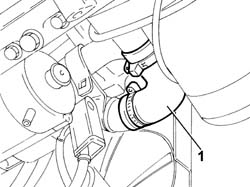

1088D51 COOLANT SUPPLY PIPE FROM CRANKCASE TO OIL/WATER HEAT EXCHANGER - R.R. WITH REAR ENGINE SUPPORT REMOVED
- Path
- Procedures > 10 ENGINE UNIT > 1088 ENGINE COOLING > 1088D COOLANT HOSES AND SLEEVES > 1088D51 COOLANT SUPPLY PIPE FROM CRANKCASE TO OIL/WATER HEAT EXCHANGER - R.R. WITH REAR ENGINE SUPPORT REMOVED
- Kind
- repair procedure (removal / refitting; the operation number is the code)
- Applies to
- engines: 2.3 JTD 16V; all production periods
- Interactive page
- https://sloeber94.github.io/elrnDB-fDct/en/#/244000965
Applies to: engines: 2.3 JTD 16V; all production periods
 Removing
Removing
 Refitting
Refitting- Position the vehicle on the lift.
Op. 7055B54 UNDER-ENGINE GUARD - R R
- Disconnect the lower radiator pipe.
1. Remove the coolant outlet pipe by disconnecting the collars securing the end to the heat exchanger and the rigid pipe.

Applies to: engines: 2.3 JTD 16V; all production periods
Refitting
Removing- Fit the coolant outlet pipe by connecting the collars securing the end to the heat exchanger and the rigid pipe.
- Connect the lower radiator pipe.
Op. 0010T20 COOLANT CHECK DENSITY AND TOP UP IF NECESSARY
Op. 0010T21 COOLANT CHECK DENSITY AND TOP UP IF NECESSARY
Op. 7055B54 UNDER-ENGINE GUARD - R R
- Remove the vehicle from the lift.
Topics linked from this page (3)
- 0010T20 COOLANT CHECK DENSITY AND TOP UP IF NECESSARY
- 0010T21 COOLANT CHECK DENSITY AND TOP UP IF NECESSARY
- 7055B54 UNDER-ENGINE GUARD - R R